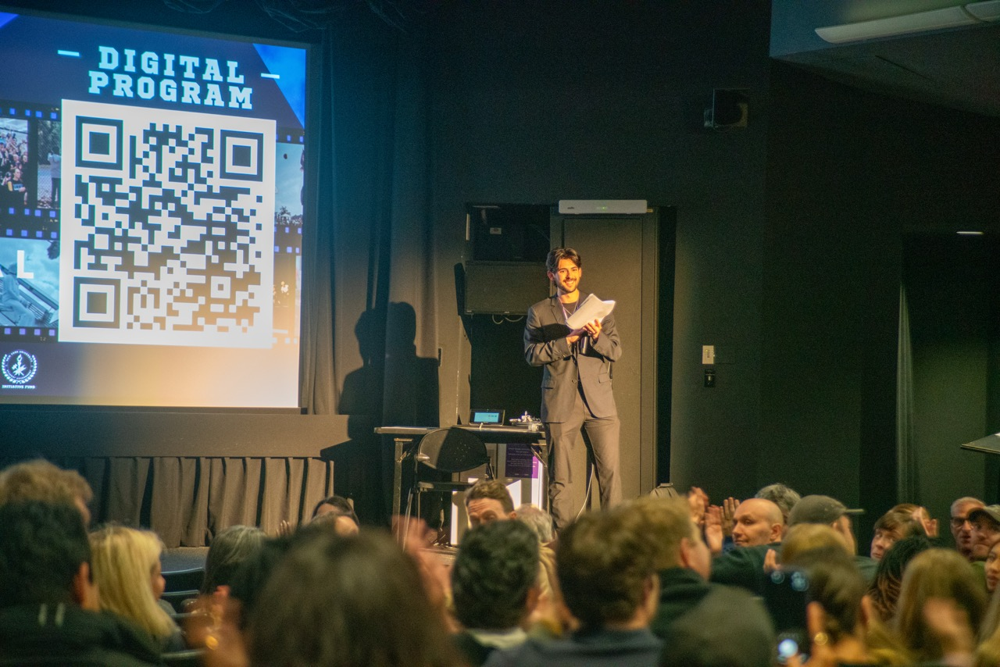
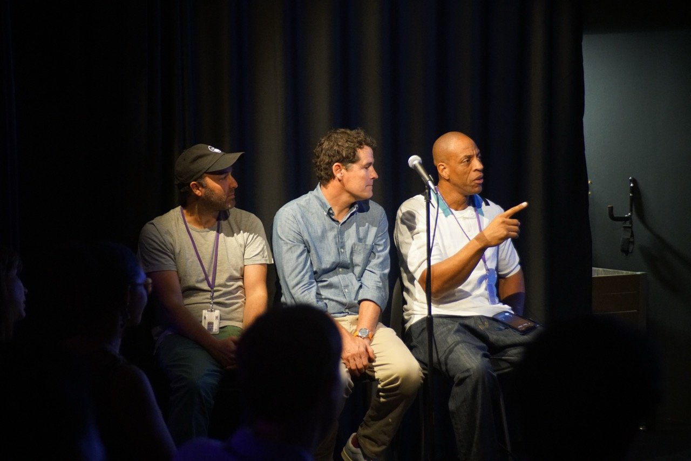
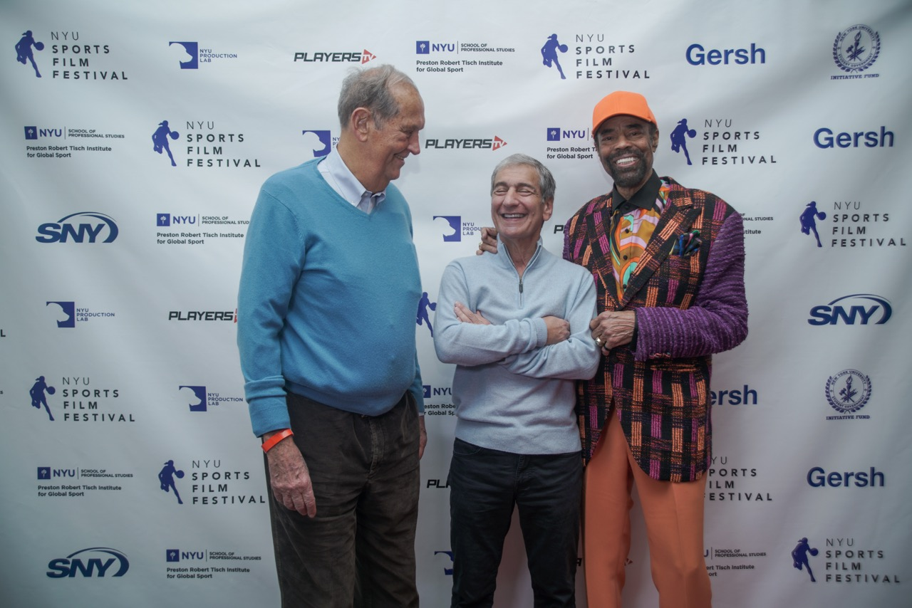
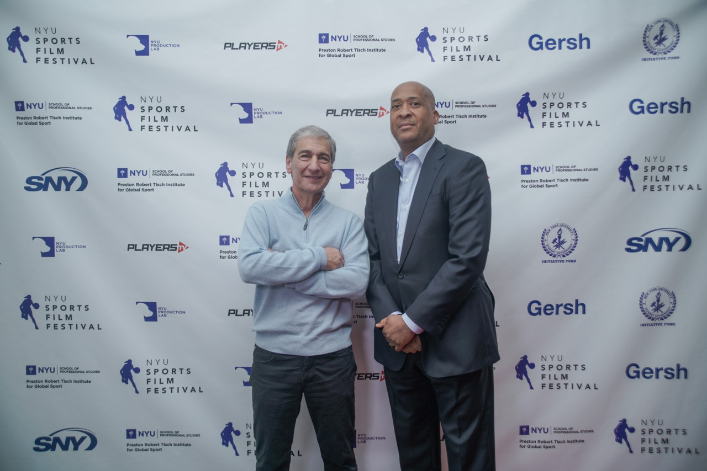
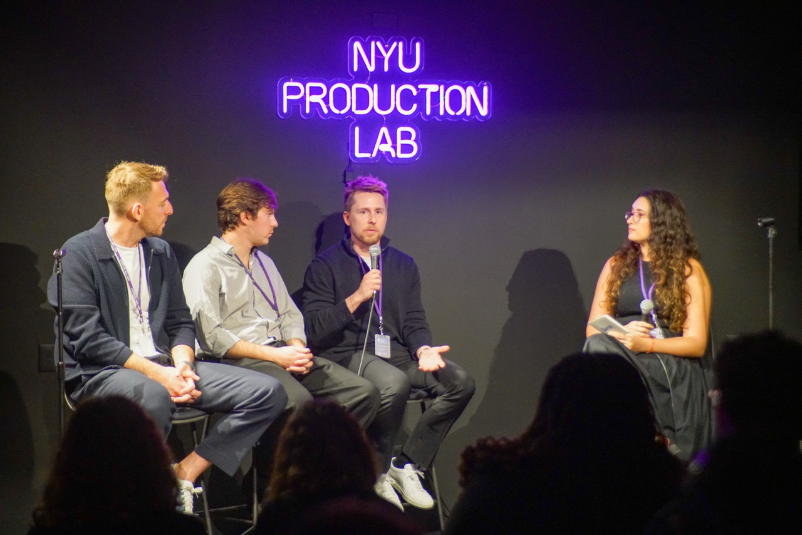

6th Annual
NYUSFF
April 17–19, 2026 · Cantor Film Center, NYC
The 6th Annual NYU Sports Film Festival delivered its most expansive and well-attended program to date — three days of screenings, panels, pitch contests, and live events bringing together industry leaders, student filmmakers, and international guests.

Opening Event:
Pitch Contest
The festival opened with its flagship Pitch Contest — featuring a panel of high-level industry judges, pre-selected finalists, and a live "wild card" round with full audience participation.
Judges
- Jerome Williams — Former NBA Player, Chairman & CEO of IP FAMBA Inc.
- Aron Phillips — Chief Content Consultant, Same Page Entertainment; former COO of SLAM
- Bryan Terry — President of Players Studio, PlayersTV
Winner
Jürgen Locadia — Nic Chang
A feature documentary on Curaçao international footballer Jürgen Locadia, currently playing in the USL in Miami. Winner of the Jury Prize ($500), Audience Award, and Sports Documentary Course Audience Award.


Amor Azor presents her pitch "VIOLETS" to the judges and audience during the Pitch Contest
Night 1 Opening Night
One of the highest-attended events of the weekend, Opening Night featured two major screenings followed by a packed networking reception. Unraveling George (Dir. Mike Tollin) drew notable guests including Walt Frazier, Bill Bradley, and William Wesley. Open Book (Fresh Focus Sports) delivered a powerful Q&A with former coach Emmanuel "Book" Richardson and filmmakers Thanasis Petrakis and Anthony Kuzviwanza.

Bill Bradley, Mike Tollin & Walt Frazier at the step-and-repeat

William Wesley at Opening Night
Industry Programming:
Gersh U Panels
Saturday programming featured Gersh U — a series of panels with leading voices across sports, media, and culture. The panels drew strong attendance and highlighted the festival's growing role as a bridge between sports and the entertainment industry.
Panelists
- Que Gaskins — Head of Think450
- Deirunas Visockas — EVP, Gersh Sports; NBPA-certified agent
- Jared Thompson — VP, Alternative Programming
- Schuyler Roos — Talent Coordinator, Gersh
- Caleb Miner — PUMA, NASCAR, Chris Paul, Carmelo Anthony
- Ionie Banner — Data, equity, and philanthropy
Moderators
- Jayson Council — Head of Culture, Gersh
- Julia Benavides — Talent Agent, Digital at The Gersh Agency
- Raven Vaz — Executive Assistant to the Head of Culture at Gersh

Film Programming
Across three nights, the festival showcased a diverse slate of films — each followed by filmmaker Q&As — drawing audiences from across New York and the international film community.
- Opening Night: Unraveling George & Open Book
- Night 2: 6 short films + filmmaker Q&As
- Night 3: 7 short films + filmmaker Q&As
The festival also featured the Sports Documentary Course Screening, highlighting work from students in NYU's pioneering course led by Ronnie Kay.

Over $4,000 in Prizes Awards & Recognition
Film Awards
- Best NYU Documentary Hold On — Will Fitzpatrick · $300
- Best Open Documentary Shifting Courts — David Fernández Graña · $300
- Best NYU Narrative Bleeding Edge — Daeyoung Kim · $300
- Best Open Narrative SHOWTIME — Francesco Giardiello · $300
- Audience Award Lunch Box — Sean Billings & Romeo Okwara · $800
- Jury Grand Prize La Liga — Paul Rosenfeld & MacPherson Christopher · $1,000
Pitch Contest
- Jury Prize Jürgen Locadia — Nic Chang · $500
- Audience Award Jürgen Locadia — Nic Chang
Additional Recognition
- SNY Official Selections Lunch Box, Spit Out Your Bones, The Itinerant
- Photography Competition Winner Nicolás Galvis, Fight Night · $500 + MLS media credential

Sean Billings & Romeo Okwara — Audience Award, Lunch Box

Nic Chang accepts the Sports Documentary Course Audience Award for Jürgen Locadia
Looking Back A Landmark Year
With a packed opening night, strong panel attendance, international film participation, and a highly engaged audience throughout the weekend, the 2026 NYU Sports Film Festival marked a significant step forward in both scale and impact. The festival continues to solidify its position as a leading platform for emerging sports storytellers and a growing hub for the intersection of sports, film, and culture.